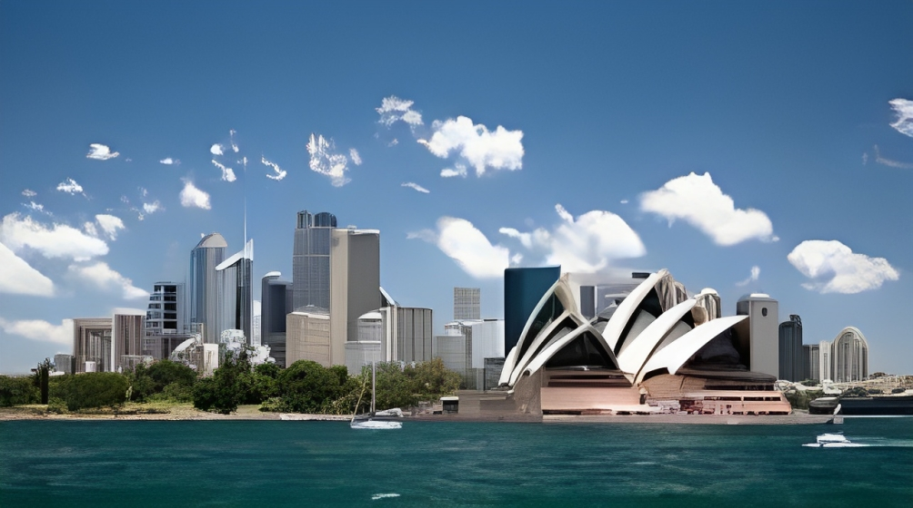
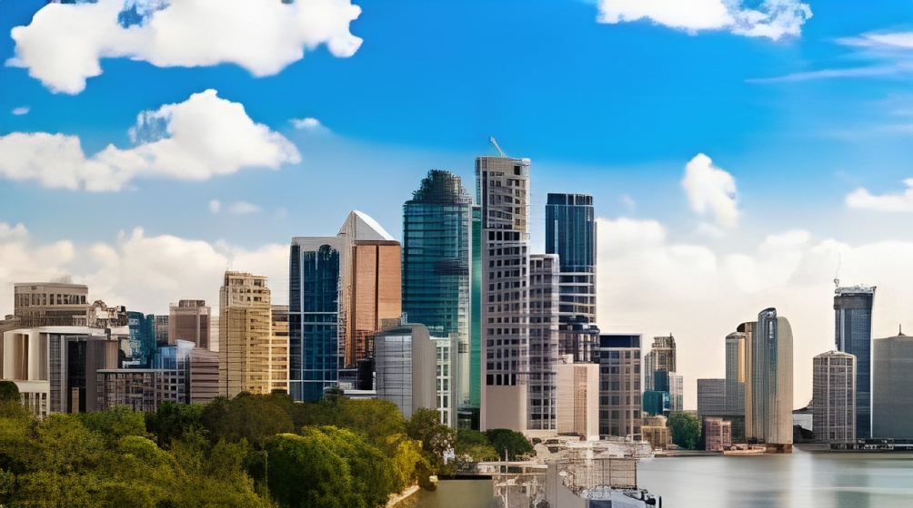
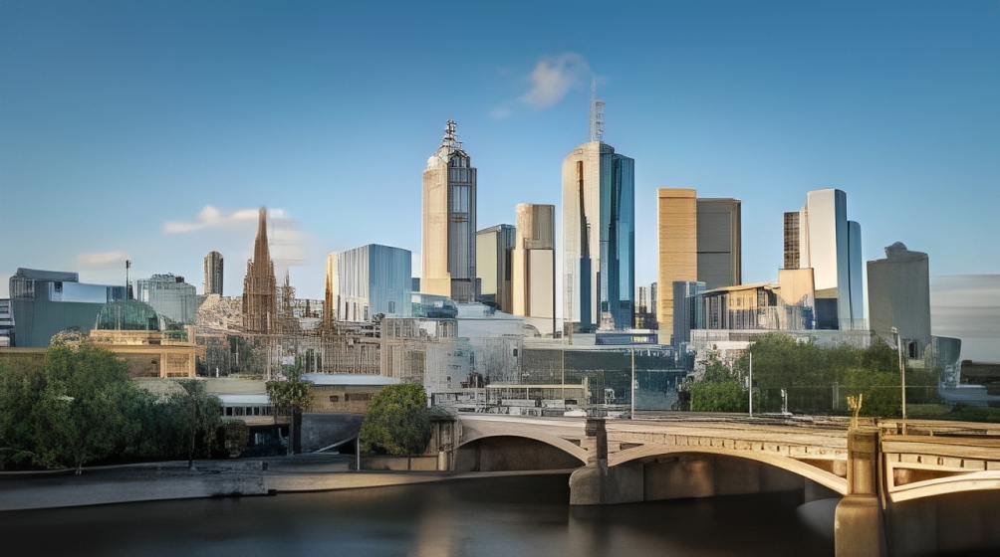

Synopsis
Let us discover more in
Sydney, Melbourne, and Brisbane!
 |
Sydney, the capital of New South Wales, is renowned for its iconic landmarks such as the Sydney Opera House and the Sydney Harbour Bridge. It is a bustling metropolis with a thriving arts scene, beautiful beaches, and a rich cultural heritage. |
Melbourne, the capital of Victoria, is famous for its arts, culture, and culinary scene. It's known for its laneway cafes, street art, and cultural events, including the Melbourne International Arts Festival. The city boasts a diverse population and is often regarded as Australia's cultural capital. |
 |
 |
Brisbane, the capital of Queensland, is a vibrant city known for its warm climate, outdoor activities, and relaxed lifestyle. It's situated along the Brisbane River, offering various outdoor activities such as biking, hiking, and water sports. The city is also known for its thriving music and arts scene, with numerous galleries, museums, and live music venues. |